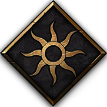
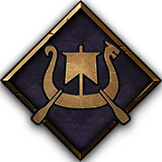
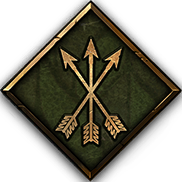
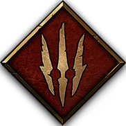
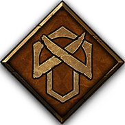

Nilfgaard
More than any other GWENT faction, Nilfgaard relies on diplomacy and subterfuge to disrupt enemy strategies and enact its own. The empire plants spies behind enemy lines to perform sabotage and reveal cards in the opponent’s hand. Well-aware of the benefits of power, Nilfgaardians target the strongest enemy units, crippling them or eliminating them altogether.
Nilfgaard is a cunning and dangerous faction. They are not afraid to use controversial methods to get what they want. Order, discipline, dignity,diplomacy and strategy are the themes, which might describe “the black ones” the best.
The Nilfgaardian Empire is the largest and most powerful state located to the south of the Northern Kingdoms. The Nilfgaardians seek to conquer lands and spread their superior culture and civilization. The exact scale of the empire is never shown, but from clues within the Witcher lore it is safe to assume that it is by far the largest of the civilizations. The Nilfgardian are proud of their culture and demonstrate their superiority, power and knowledge whenever they can. To a Nilfgaardian all outsiders are barbarians, especially Skelligers.
Despite thinking very highly of themselves and being cruel in both their decisions and behaviour, Nilfgaardians are not as racist as the kingdoms in the Northern Realms. They acknowledge and even respect elves, dwarves, and witchers for the most part. Because of their domination and most of their power coming from conquered lands they are very commonly compared to the Rome empire from our time. Conquered lands are turned into “provinces”, usually ruled by locals as long as they submit themselves to the Emperor. People from these subjugated lands still see themselves as outsiders; only those born inside the boundaries of the motherland are true Nilfgardians. Nilfgaard is an absolute Monarchy led by an emperor. Emperors are also religious figureheads for Nilfgaard. They represent “the great sun” as high priest, which is where the sun symbol you can see on their armor, clothes and banner comes from. Since Nilfgaard in Gwent is also led by their emperors, we will have a closer look at their emperors and Gwent-Leaders Emhyr, Jan Calveit and Moovran.
Skellige
Skelligers embrace death’s glory, knowing their priestesses and medics can summon departed heroes from the Graveyard to fight another day. A Skellige player sends units to the Graveyard on purpose… only to bring them back later, stronger than ever. Skelligers also turn wounds to their favor by inciting their bloodied warriors to attack with redoubled strength.
Skellige is an archipelago of six islands. Each of the seven clans are ruled by a Jarl, and a ruler is chosen from among these Jarls that governs the entire kingdom. Skellige itself belongs to the Northern Kingdom, but it sets itself so far apart in culture and pure distance that it stands alone. Skellige culture and structure is largely inspired by the Scandinavian Viking culture; if you didn´t know the voice actors for Skellige were using an Irish Accent it could be confused with a Scandinavian accent. In general Skelligers are very direct people; a good example of that is this scene starring Geralt, Lugos, Yennefer and Donar An Hindar. You have problems with someone? Someone insulted your dear wife? Just let the fists fly and all shall be forgotten. Afterwards you have a drink together, to prove there is no bad blood between you.
Skellige is split into seven clans: The big ones are Tuirseach and An Craite, which rule over the biggest islands in Skellige and represented most Kings in the history of Skellige. The others Clans are: Brokvar, Heymaey, Dimun, Drummond and Tordarroch. You can probably recognize those names from some of the Gwent cards, those names indicate which clan they stand for. Each clan has different colours to represent their clan. Honor and family are very important values for Skelligers and the Clans in particular.
Skelliges’ views on life, death, and ressurection are largely based on their belief in the cult and the gods of their forefathers. Freya is the goddess of fertility, love and beauty, also known as the Great Mother. The people of Skellige, particularly the priestesses, are highly devout people. In Gwent this is represented by the Priestess of Freya, Sigrdrifa, and Restoration. Speaking of beliefs, the Skelligers have a multitude of legends and prophecies flying around in their culture. One of these prophecies states that in the final Battle “Ragh Nar Roog” between the forces of good and evil, the magical rooster Kambi will awaken the mythical hero Hemdall to fight against the forces of evil. This is the origin of the Kambi as a card in Gwent, and the legend itself is likely based on “Ragnarök” from Norse Mythology. Hemdall is likely based on a hero from Norse Mythology called Heimdallr.
Scoia'tael
The Scoia’tael are supremely agile, able to outmaneuver their foes with units able to deploy to any row. As befits guerilla fighters, they often set ambushes: cards played face down which reveal themselves only when the trap has already sprung. To bolster their numbers, the Scoia’tael quickly raise new Commandos, zealous neophytes that take the opponent by surprise.
There is not much known about the start of the Scoia´tael and who or what started the rebelation. The elves are the most represented race in the Scoia´tael, but it is not uncommon to see other non-humans like dwarves or even dryads,- as those races are a very important part of what makes the Scoia´tael faction identity. We will cover each tribe individually.
Elves: Elves are one of the so-called “elder races”. Elder races are those who have been in the witcher world since before the humans even got to it. This is also a reason to why many elves look down on humans and think, the elves are the ones who have been created, while the humans are only a consequence of evolution. The nordlings have hated, abused and killed many elves, thus leading to the existance of the Scoia´tael and the majority being elves.
Dwarves: Dwarves also belong to the elder races. Their hometown is the mountain-city Mahakam, founded by Brouver Hoog. Despite them being lower than humans and elves, they make up for that with their pure strength, long beards and sturdyness, making them more tough and resistent. They are known for their long beards and their ability to craft weapons, armor and other things.
Dryads: are the female protectors of Brokilon forrest. They are a mysterious race and not much is known about them or their goals. They take strong human or elven males to propagate with and will raise those children as dryads. They are known for their skills in archery and agility. They can be very silent making them hard to track, notice or identify, because they are connected with nature and if they move out of woods they cloth like normal females.
Northern Realms
The Northern Realms seek to gain control of the battlefield by reinforcing their numbers. Their valiant commanders march in the front lines to inspire their units and boost their strength. Their troops can be immunized against attacks and weather spells through promotion to Gold status, while Medics can return fallen soldiers to fighting form.
Redania, Temeria, and Kaedwin are three of the most prominent kingdoms within the Northern Realms. These kingdoms are home to a diverse range of peoples, each with their unique customs, traditions, and motivations. These rulers strive not only to expand their dominions but also to maintain their own power and secure their legacy. Their conflicts and political maneuvers have made the Northern Realms a turbulent and contested region, and the relentless warfare has allowed Nilfgaard, the mighty empire to the south, to grow into the most formidable force in the Witcher world.
The heart of the Northern Realms is a place of honor and valor. It's a world where the might of armies is bolstered by the bravery of their commanders. Commanders are often seen leading their troops into the thick of battle, and their presence serves as a rallying point for the soldiers under their command. Medics, too, play a vital role, tirelessly working to return fallen soldiers to the fray. In the face of relentless warfare, Northern Realms soldiers can be promoted to Gold status, making them immune to enemy attacks and the harsh elements of weather spells.
The Northern Realms faction is a testament to the enduring spirit of humanity in the face of adversity. It's a world where valor and unity are celebrated, and where commanders and soldiers alike are willing to make the ultimate sacrifice to achieve their goals.
Monsters
In the dark and treacherous world of The Witcher, the Monsters faction embodies the unspeakable horrors that lurk in the shadows. These nightmarish creatures attack in vast numbers, forming hordes that grow ever more menacing as they amass. They are the embodiment of terror, and their insatiable appetite for destruction knows no bounds.
The Monsters faction is a motley crew of both natural and unnatural abominations found in the Witcher universe. It's a dark and chaotic realm where the line between predator and prey blurs. Among its denizens, you'll find the gruesome likes of vampires, necrophages, and frightful specters. Their abilities often center around the consumption of their own kind, a horrific act that strengthens them and makes them all the more terrifying.
In the world of The Witcher, the Monsters faction is a reflection of the untamed wilderness, where ferocity and primal instincts reign supreme. Whether it's a pack of bloodthirsty ghouls or the majestic but deadly Forktail, the Monsters faction represents the darker side of the Witcher universe, where survival of the fittest is the only rule that matters.
Syndicate
In the bustling streets of Novigrad, no crime is too heinous for the cunning and ruthless cutthroats of the Syndicate. These nefarious criminals are motivated by one thing and one thing alone – the allure of cold, hard coin. The Syndicate faction is the embodiment of avarice and greed, where power and wealth are the ultimate goals.
Syndicate thrives on the art of profit, using any means necessary to accumulate wealth. They are the undisputed masters of the criminal underground, and in their world, money reigns supreme. Syndicate decks are all about gathering coins through various illicit means, and these coins can be spent in a multitude of ways, from hiring powerful mercenaries to unleashing brutal crimes on the battlefield.
The Syndicate faction is a reflection of the seedy underbelly of the Witcher world, where corruption and vice hold sway over the city's inhabitants. Here, you'll find cunning smugglers, ruthless assassins, and cunning loan sharks who will stop at nothing to secure their financial interests. In Syndicate, it's all about the coin, and they will go to any length to get their hands on it, even if it means delving into the darkest depths of depravity.